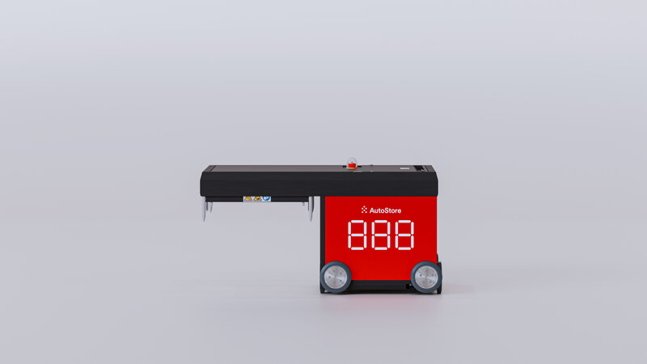

CX Immersion baseline
A shared current-state artifact — narrative, variability map, CX truths, blind spots, and value-at-risk framing.
Prepared for Carlos — Jonas Jakobsen, March 2026

Create a shared, defensible baseline of the current AutoStore Customer Experience — reflecting reality across customers, partners, journey stages, and maturity levels.
A shared current-state artifact — narrative, variability map, CX truths, blind spots, and value-at-risk framing.
Investigate how to establish meaningful CX measurement with end-customers.
Improve usability, actionability, and trendability of partner feedback signals.
Create a repeatable way to capture daily CX signals so learnings aren't trapped in conversations.
Increase firsthand exposure to customer reality to improve prioritization and credibility.
Engaged cross-functional stakeholders for interviews; high interest in direct customer exposure. However, securing interviews has proven far harder than expected — only 5–10 customers confirmed despite significant effort.
Previously unreadable PBI output transformed via Genie: partner- and region-specific filtering, comments linked to scores.
Element and Swisslog confirm NPS/CSAT programs exist, though likely insufficiently AutoStore-specific.
Daily conversations surface recurring frictions, but structured capture remains challenging.
Lower internal prioritization, more protective customer-access behavior, and no central customer-access management system.
Intentionally paused until Forrester discussion — staying aligned with immersion discipline (no solutioning before diagnosing).
Advancing structurally requires coordination with Beata, who currently owns the survey — making careful stakeholder alignment essential.
A scalable method has not been established yet due to tooling and process dependencies.
Structural patterns emerging consistently across conversations and internal reflections — robust even at this early stage.
AutoStore lacks a consistent system for accessing end-customers. Contact depends on personal networks, no tool tracks "total pressure" on customers, and internal gatekeeping is high.
AutoStore has inconsistent visibility into how partners' commercial models shape behavior toward end-customers. Many partner SLAs exclude software upgrades and proactive optimization.
Because partners are not incentivized for continuous improvement, customers often never receive performance enhancements embedded in newer software.
Complete the baseline: current-state narrative, CX variability map, CX truths, blind spots, and value-at-risk framing. Ground all strategic decisions in reality.
Structural misalignments in partner incentives, SLAs, and responsibilities are a major systemic CX opportunity. Phase 2 should define clear responsibilities, shared KPIs, alignment on innovation delivery, and transparent service offerings.
After Forrester input, propose minimum viable end-customer measurement — what, when, who owns — including partner-aligned metric sharing if viable.
Current-state CX narrative, variability map, truths, blind spots, and value-at-risk framing delivered as a shared reference.
Measurement strategy defined post-Forrester — what to measure, how, and who owns it.
Preparation for partner diagnostic conversations to address structural CX ownership gaps.
Improved understanding of where CX ownership breaks down across AutoStore and partner layers.
Questions, feedback, or areas you'd like me to go deeper on?